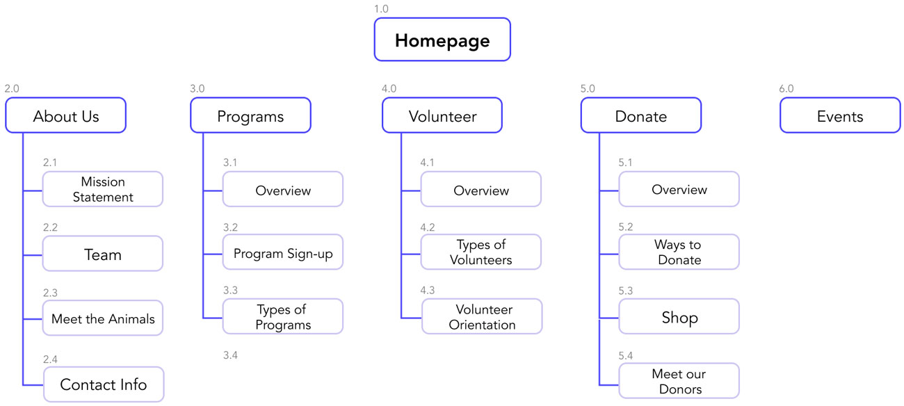

mylan le.
ux/ui designer & illustrator
animal assisted happiness.
Role: UI/UX designer
Task: Research, Wireframing, Prototyping, Style Design & Development, User Testing
Tools: Figma, InVision, Illustrator, InDesign
Timeline: 1.5 months
Collaborators: Mylan Le, Jessica Gregorio, Janae Keller, and Bianca Drevensek
overview.
Animal Assisted Happiness is an organization that focuses on bringing animal interactions to childrens and their family members. Specifically they want to enrich the lives of youths who have special needs and disabilities and providing them with an experience that brings positivity. Their vision is a "Million Smiles". The organization is 100% donation based and relies heavily on volunteer participation.
the problem.
Currently their website does not align with their mission, which is bringing joy and happiness for the youth through animals. How might increase the visibility and trust with a more accessible website design therefore increasing donations and volunteer participation?
user research.
We surveyed 39 people to get a scope of how people typically interact with non-profits and charities, and how they would interact with a non-profit that works with children and animals. We learned that not many people volunteer often and we believe this could be one of AAH goals for their website which is getting more volunteers since this organization does rely heavily on them. We also want to see what payment option users prefer, we think it’s really important since this organization is 100% donated base, we want to feel that the website and what payment provider they use it reliable and trustworthy.
{kind=link}
We also conducted 5 usability tests and have our users test out the website itself and we received a lot of feedback. Some of the comments that stood out to us that we could definitely keep in mind with the recreation of the website.
{kind=link}
heuristic issues & evaluations.
After collecting data from my interviews and survey, we discovered many issues about the website's navigation. Here are some issues that stood out to us:
• The navigation is simple but it could use a secondary for the website which could help users find specific information easily and quickly.
• Icon styles are inconsistent and misleading. “Shopping Bag” could be misunderstood as a “Check Out” or “View Shopping Cart”. Icon placements on top right can also be missed by the user.
• Text isn't readable. Users have complained about the purple text being too hard to read along with condensed/tight spacing between the lines. We would suggest changing the font and color.
{kind=link}
{kind=link}
meet helen and brian.
Helen is a Special Needs Teacher and her goal is to find a way to have her students be engage in the community, specifically a non-profit. However she is on a tight budget for class materials and also wants to make sure her students and all participate (inclusivity & accessibility).
Brian is a full-time recruiter at a FinTech company in the Bay Area. He is very family oriented and has a sister with Autism who is currently attending AAH. He hopes to provide as much support for her and the organization but lacks trust in many non-profit funding allocations.
{kind=link}
journey maps.
{kind=link}
{kind=link}
competitive analysis
SF SPCA is a non-profit organization that is very well-known nationwide. Their mission is to save and protect animals, provide care treatment, advocate for welfare and enhance the human-animal bond.
• Competitive Advantage: They have a clear Call-to-Action, simple and easy navigations, great emotionally driven stories/testimonials to attract potential users, easy to red and not too busy, great interactive design, and very purposful (we know what the organization aims to do without even looking at the mission statement)

card sorting.
We wanted to prioritize the main navigation first. We conducted a three (closed) card sorting tests here are some of the key points we kept in mind before we started on the lo-fi.
• Move the store into the "Donation" category since all payments are considered as a donation to AAH.
• Have a category for events and current schedules for the public and volunteers.
• Emphasize the mission statement in the Homepage and About Us section so users understand the organization better.
{kind=link}
{kind=link}
sitemap.
The card sorting helped us figure out how we wanted the whole navigation to look like. We created a site-map to get a better sense of how users will navigate from primary to secondary.
{kind=link}
lo-fi wireframes.
We then went the phase of sketching our wireframes to get a general idea of how AAH was going to look. Before working on the visual and content design, I wanted to have the basic structure of the website. I kept in mind of accessibilty and how it would affect the user when browsing the programs, events, donating to the organization.
{kind=link}
digital wireframes & user testing
Then we transferred our sketches into a digital lo-fi wireframe. After user testing, we received alot of feed. We wanted to make sure we wanted to emphasize:
• The "Donation" button. Since the organization is 100% donation based, we believe that making this cateogory stand out is most was important.
• The "Mission Statement". It's important for the user to know what the organization is about, and we believe in their old website design, it was difficult for users to understand what their goal/mission was. We want to make sure in this new re-design, we utilize the white space, making text easier to breathe and read.
• The "Calendar/Events Category". The navigation experience for the calendar cateogory from the old website was very outdated and confusing for the user because of the infiinite scroll making them feel lost. We wanted to use a card UI design layout to make it accessible to distinguish each event.
{kind=link}

Check me out for the Lo-Fi InVision Link :)
style tile.
I took the role in designing the whole UI style for the website. We decided to keep the main color of purple, but make it more vivid, along with other colors as well such as yellow and pink. We want the color palette to express a sense of playfulness, happiness, and engagement. Some other changes we made that we believe will help represent AAH are:
• Redesigning the logo: The old logo was hard to visualize and the quality was low-res. We simplified the logo to make it feel very wholesome and happy.
• Font change: As much as we all love Comic Sans, it's very outdated. However, we decided to keep the "rounded style" and used SF Pro Rounded which expresses a more playful yet simple style.
• Icon design: Icons from the old website was very consistent and lacked in style. The new AAH icons are stylize with more expression and consistency.

hi-fi prototyping.
Navigation: The primary navigation is a simple dropdown for the secondary nav. To make the "Donation" category stand out, I made it yellow and button size and style more so it is more prominent.

Browsing: When the user lands on the homepage, we make sure that what they see first is eye-catching and engageful.
• Users and quickly learn what AAH's mission and a brief overview of what the organization is about in the homepage.
• The homepage focuses on how much impact AAH has given towards the community including articles, statistics (volunteer hours, visits, etc.), and testimonials who had experiences with the organization in the past. If users wants to learn more, they navigate to the "About Us" section.
• Events are easily organized into cards and can be filtered out by date and type of event.
• Volunteer Orientation and be found through events or under the "Volunteer" cateogory.

Donating: In AAH's old website, they provided with multiple ways to donate. We still wanted to keep that in the new website, but wanted to make sure the potential donor is provided with all the information before they decided to give payment and to be able to trust that their money is being sent to the organization without hassle. Such as:
• How much impact a donor a give.
• An overview of each donation option and how that money will affect that that area.
• Giving multiple payment options such as PayPal and Venmo, who are trustworthy payment providers.

Check me out for the Hi-Fi InVision Link :)
conclusion & future development.
We believe the following should be addressed in future development:
• Reach out to Animal Assisted Happiness and present our design.
• More in-depth user task pages and responsive design pages (volunteer sign up forms, animal profiles).
• In-depth personalized UI development (icons, visuals, button animations).
• More user testing and reiterations.
• KPI measurements such as the amount of donations made/ amount of $ raised, % change of volunteer orientation sign-ups, % change of program-services requested
thank you! :)
If you have any questions/comments regarding to this case study, feel free to email/contact me!